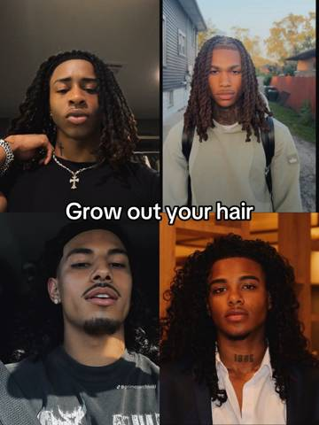
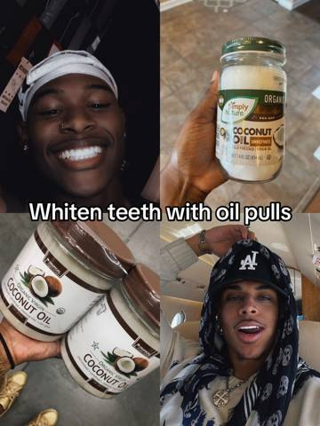

The Glow-Up Grid
 1
1
2 3
3 4
4 5
5
6 7
7A 2×2 moodboard carousel that earns the first swipe by promising free skincare tips to young men chasing a glow-up. Four real tips surround one product slide. FLEX™ sits at slide four in the same bro-register as the free advice, native enough that the viewer files it as another tip before registering it as an ad.
- Glow up tips for men
- Clear skin tips for guys
- Clean boy tips for guys
- Better skin tips for men
- Skin fix tips for bros
- Skin glow up tips for men

“Glow up tips for men”
How to shoot it
Four young men [18–25] in a strict 2×2 grid, each captured mid-smartphone-selfie. TL: studio-lit, direct gaze into phone, styled hair, silver chain on neck. TR: gym mirror, fitted tank top, confident posture, weight rack blurred behind, arm at selfie angle. BL: indoor, black hoodie, neutral expression, relaxed posture, one hand holding phone at face height. BR: car interior, eye-level selfie, daylight through the window falling across jaw and cheekbone. Clear skin and styled hair across all four. No products visible, no text within the grid. Text overlaid dead-center on the grid intersection.
Wearing: TL: dark fitted tee, silver chain, styled hair. TR: fitted tank top, gym setting. BL: black hoodie, relaxed. BR: casual tee, car interior. Streetwear register across all four — chains, clean cuts, no logos.

“Wash your face every night”
How to shoot it
Four young men [18–25] in a 2×2 grid, each in a moment that reads "just washed." TL: bathroom, leaning toward mirror, face wet, water droplets on jawline, towel draped over one shoulder, one hand mid-pat on cheek, warm overhead light. TR: shirtless, bathroom, splashing water onto face from a running tap, eyes closed, water caught mid-arc, tile wall behind. BL: bedroom, fresh out of the bathroom, skin still dewy, looking into phone with a slight half-smile, towel behind neck, warm window light. BR: bathroom mirror selfie, face dry and clean, slight sheen across forehead, direct gaze, hand resting on counter edge, flat white light. Each quadrant lit by the warm overhead or window light of its own room.
Wearing: TL: shirtless, towel on shoulder, silver chain. TR: shirtless, bathroom. BL: white tee, towel behind neck. BR: black tank top, chain. Bare skin on the face is the subject — the wardrobe frames it.
“Drink water to clear your skin”
How to shoot it
2×2 grid. TL: a young man [18–25] in a car, one hand on the wheel, the other holding a clear water bottle at chest height, direct gaze into phone propped on the dash, natural daylight through the windshield catching his jawline. TR: a large clear water bottle with lemon slices visible inside, shot on a white countertop, backlit by a window, condensation on the glass, no hand in frame. BL: a second young man [18–25] indoors, seated, holding a clear water bottle up near his jaw, relaxed expression, looking into phone, warm indoor light from one side. BR: a second clear water bottle with cucumber slices floating inside, shot on a wooden surface, soft natural light, no hand in frame. The two subject quadrants and two product quadrants alternate diagonally.
Wearing: TL: black hoodie, silver chain, styled hair. BL: grey crewneck, relaxed fit, clean-cut hair. Streetwear register matching slide 1.

“Fix your skin bro / Bumps and dark marks? / Use FLEX™ to clear them out”
How to shoot it
2×2 grid. TL: a young man [18–25] shirtless, bathroom mirror, holding FLEX™ Pro Vibrating Face Brush up near his jawline with the bristle side toward camera, the device visible and recognizable, direct confident gaze into phone, bathroom tiles and warm light behind. TR: FLEX™ Pro Vibrating Face Brush product shot — the device standing upright on its USB-C wireless charging base, clean white surface, soft directional light casting a short shadow, the FLEX™ mark legible on the handle. BL: a second product shot — FLEX™ held in a hand at a three-quarter angle, bristle head in focus, the hand gripping the handle naturally as if mid-use, plain light background. BR: a second young man [18–25], gym mirror selfie, fitted tank top, holding FLEX™ at chest height label-out, slight grin, weight rack blurred behind, overhead fluorescent light. The two subject quadrants and two product quadrants alternate diagonally, matching the source's person-and-product pattern.
Wearing: TL: shirtless, silver chain, styled hair, bathroom. BR: fitted tank top, chain, gym setting. Streetwear register matching slide 1.

“Moisturize after every wash”
How to shoot it
2×2 grid. TL: a young man [18–25] in a car, one hand on jaw, freshly moisturized skin catching daylight through the side window, slight sheen across cheekbone and forehead, direct gaze into phone, the other hand resting on the wheel. TR: a plain moisturizer jar on a bathroom counter, cap off, white cream visible inside, flat bathroom light, no brand name legible — a clean generic jar. BL: a plain moisturizer tube lying on a folded white towel, soft natural light, the tube slightly squeezed with a dot of cream at the nozzle, no brand name legible. BR: a second young man [18–25] indoors, towel on one shoulder, rubbing moisturizer into one cheek with two fingers, eyes half-closed, warm overhead light, bathroom mirror behind. The two subject quadrants and two product quadrants alternate diagonally.
Wearing: TL: black hoodie, chain, styled hair. BR: shirtless, towel on shoulder. Streetwear register matching slide 1.

“Wear sunscreen every day”
How to shoot it
2×2 grid. TL: a young man [18–25] outdoors, standing in direct sunlight, one hand shielding eyes slightly, the other holding phone at selfie angle, clear skin glowing under the sun, relaxed confident expression, blue sky behind. TR: a plain sunscreen bottle standing upright on a windowsill, strong daylight hitting the bottle, no brand name visible — a clean tube with a flip cap, warm light. BL: a second plain sunscreen tube lying flat on a light wooden surface beside a pair of sunglasses, natural light, minimal styling. BR: a second young man [18–25] outdoors, sun on face, applying a thin line of sunscreen across one cheekbone with two fingers, direct gaze into phone, golden-hour light catching the streak on the skin. The two subject quadrants and two product quadrants alternate diagonally.
Wearing: TL: white tee, silver chain, styled hair. BR: grey tank top, no chain, clean-cut. Streetwear register, outdoors.

“Follow for more”
How to shoot it
Single image, full frame — no grid. A young man [18–25] in a monochrome-treated photograph, seated in a minimal room, direct gaze to camera, one arm resting on knee, confident and still. The image is desaturated to near-black-and-white with lifted blacks, echoing the B&W treatment of the source's closing frame. The mood is cool and earned — this is the portrait after the tips, not before them. Text overlaid dead-center.
Wearing: Black hoodie, silver chain, styled hair. Minimal — the monochrome treatment makes the outfit secondary to the face and the text.
- Glow up tips for men
- Wash your face every night
- Drink water to clear your skin
- Fix your skin bro / Bumps and dark marks? / Use FLEX™ to clear them out
- Moisturize after every wash
- Wear sunscreen every day
- Follow for more
The brief, word for word
The Glow-Up Grid
A 2×2 moodboard carousel that earns the first swipe by promising free skincare tips to young men chasing a glow-up. Four real tips surround one product slide. FLEX™ sits at slide four in the same bro-register as the free advice, native enough that the viewer files it as another tip before registering it as an ad.
WHAT TO SHOOT
The openings — shoot all six
Opening 1 · Control Shoot: Four young men [18–25] in a strict 2×2 grid, each captured mid-smartphone-selfie. TL: studio-lit, direct gaze into phone, styled hair, silver chain. TR: gym mirror, fitted tank top, confident posture, weight rack behind. BL: indoor, black hoodie, neutral expression, relaxed. BR: car interior, eye-level selfie, daylight through the window. Clear skin and styled hair across all four — the grid reads as "guys who already glow." No products, no text within the grid. On screen: "Glow up tips for men"
Opening 2 · Clear skin Shoot: Four young men [18–25] in a 2×2 grid; skin fills the frame at selfie distance. TL: bathroom, warm window light bouncing off clear cheekbones, direct gaze into phone, jawline cutting shadow, faint moustache visible. TR: post-shower, slight sheen on forehead, towel draped on one shoulder, pores visible but clean, looking straight into the lens. BL: golden-hour outdoor selfie, sunlight hitting even-toned skin at an angle, half-smile, relaxed eyes. BR: car interior, dashboard glow catching a clear chin and jaw, one hand on the wheel, confident stare into phone. The skin texture is the subject. On screen: "Clear skin tips for guys"
Opening 3 · Clean boy Shoot: Four young men [18–25] in a 2×2 grid, each in the clean-boy register — neutral tones, deliberate minimalism. TL: white tee, clean bedroom, muted duvet, face freshly washed, neat hair, looking into phone at arm's length. TR: outdoors against a light wall, no chains, groomed brows, no jewelry, natural light flat on clean skin. BL: bathroom, face mid-splash, water droplets caught frozen on skin and eyelashes, white towel folded on the counter. BR: car mirror selfie, clean hoodie, no jewelry, styled curly afro, direct gaze, minimal. The grid reads as a "clean boy starter pack" moodboard. On screen: "Clean boy tips for guys"
Opening 4 · Better skin Shoot: Four young men [18–25] in a 2×2 grid, each reading as "recently arrived" — not born flawless, but improved. TL: mid-jawline-touch in a bathroom mirror, slight confident smile, skin even-toned, warm light from one side casting a soft shadow. TR: outdoor, full sunlight on face, styled curly afro, relaxed direct gaze, clear glowing skin that reads as maintained not genetic. BL: gym mirror selfie, post-workout, fitted tank, fresh haircut, skin hydrated and slightly flushed, overhead fluorescent light. BR: bedroom, standing in natural window light, phone at chest height, chain on, direct gaze, skin that looks like it changed in the last 90 days. On screen: "Better skin tips for men"
Opening 5 · Skin fix Shoot: Four young men [18–25] in a 2×2 grid, grittier and more casual. TL: shirtless gym-mirror selfie, phone at chest height, weight rack blurred behind, direct stare, skin good but the shot is raw — slightly off-center, visible gym noise. TR: bathroom, backward cap, no shirt, one hand resting on the counter near a soap dispenser, bathroom tiles visible, confident neutral face, faint moustache. BL: car interior, hoodie up, one arm on the wheel, phone in the other hand, eye-level selfie, streetlight on jawline. BR: bedroom mirror, chain visible, tank top, leaning toward the glass, slight smirk, phone flash catching skin. The grid reads like screenshots pulled from a group chat. On screen: "Skin fix tips for bros"
Opening 6 · Skin glow up Shoot: Four young men [18–25] in a 2×2 grid, each at a different hour — the grid compresses a glow-up arc into one frame. TL: soft morning light, bedroom, face just washed, water still on jawline, looking into phone, the "start" of the glow. TR: gym mirror, post-workout, slight flush on skin, overhead fluorescent light, active — mid-arc. BL: golden-hour outdoor selfie, warm light catching clear skin and styled curly afro, half-smile, relaxed — the "arrival." BR: car interior at night, dash light and passing streetlamp catching clean jawline, confident stare, settled. The four quadrants read left-to-right, top-to-bottom as morning → midday → golden hour → night. On screen: "Skin glow up tips for men"
The slides
Slide 1 · Aspirational grid cover
Source: "4 men in mixed settings, 'Glow up tips for men,' Hook/Cover."
Shoot: Four young men [18–25] in a strict 2×2 grid, each captured mid-smartphone-selfie. TL: studio-lit, direct gaze into phone, styled hair, silver chain on neck. TR: gym mirror, fitted tank top, confident posture, weight rack blurred behind, arm at selfie angle. BL: indoor, black hoodie, neutral expression, relaxed posture, one hand holding phone at face height. BR: car interior, eye-level selfie, daylight through the window falling across jaw and cheekbone. Clear skin and styled hair across all four. No products visible, no text within the grid. Text overlaid dead-center on the grid intersection.
Wearing: TL: dark fitted tee, silver chain, styled hair. TR: fitted tank top, gym setting. BL: black hoodie, relaxed. BR: casual tee, car interior. Streetwear register across all four — chains, clean cuts, no logos.
On screen: "Glow up tips for men"
Say: nothing — picture only
Slide 2 · Face washing grid
Source: "4 men, 'Grow out your hair,' Value Tip 1."
Shoot: Four young men [18–25] in a 2×2 grid, each in a moment that reads "just washed." TL: bathroom, leaning toward mirror, face wet, water droplets on jawline, towel draped over one shoulder, one hand mid-pat on cheek, warm overhead light. TR: shirtless, bathroom, splashing water onto face from a running tap, eyes closed, water caught mid-arc, tile wall behind. BL: bedroom, fresh out of the bathroom, skin still dewy, looking into phone with a slight half-smile, towel behind neck, warm window light. BR: bathroom mirror selfie, face dry and clean, slight sheen across forehead, direct gaze, hand resting on counter edge, flat white light. Each quadrant lit by the warm overhead or window light of its own room.
Wearing: TL: shirtless, towel on shoulder, silver chain. TR: shirtless, bathroom. BL: white tee, towel behind neck. BR: black tank top, chain. Bare skin on the face is the subject — the wardrobe frames it.
On screen: "Wash your face every night"
Say: nothing — picture only
Slide 3 · Water bottle grid
Source: "2 men, 2 fruit water bottles, 'Drink cucumber water to debloat face.'"
Shoot: 2×2 grid. TL: a young man [18–25] in a car, one hand on the wheel, the other holding a clear water bottle at chest height, direct gaze into phone propped on the dash, natural daylight through the windshield catching his jawline. TR: a large clear water bottle with lemon slices visible inside, shot on a white countertop, backlit by a window, condensation on the glass, no hand in frame. BL: a second young man [18–25] indoors, seated, holding a clear water bottle up near his jaw, relaxed expression, looking into phone, warm indoor light from one side. BR: a second clear water bottle with cucumber slices floating inside, shot on a wooden surface, soft natural light, no hand in frame. The two subject quadrants and two product quadrants alternate diagonally.
Wearing: TL: black hoodie, silver chain, styled hair. BL: grey crewneck, relaxed fit, clean-cut hair. Streetwear register matching slide 1.
On screen: "Drink water to clear your skin"
Say: nothing — picture only
Slide 4 · FLEX™ product grid
Source: "2 men, 2 app UI screenshots, 'Train your body bro,' Payload."
Shoot: 2×2 grid. TL: a young man [18–25] shirtless, bathroom mirror, holding FLEX™ Pro Vibrating Face Brush up near his jawline with the bristle side toward camera, the device visible and recognizable, direct confident gaze into phone, bathroom tiles and warm light behind. TR: FLEX™ Pro Vibrating Face Brush product shot — the device standing upright on its USB-C wireless charging base, clean white surface, soft directional light casting a short shadow, the FLEX™ mark legible on the handle. BL: a second product shot — FLEX™ held in a hand at a three-quarter angle, bristle head in focus, the hand gripping the handle naturally as if mid-use, plain light background. BR: a second young man [18–25], gym mirror selfie, fitted tank top, holding FLEX™ at chest height label-out, slight grin, weight rack blurred behind, overhead fluorescent light. The two subject quadrants and two product quadrants alternate diagonally, matching the source's person-and-product pattern.
Wearing: TL: shirtless, silver chain, styled hair, bathroom. BR: fitted tank top, chain, gym setting. Streetwear register matching slide 1.
On screen: "Fix your skin bro / Bumps and dark marks? / Use FLEX™ to clear them out"
Say: nothing — picture only
Slide 5 · Moisturizer tip grid
Source: "2 men, 2 Vaseline jars, 'Use Vaseline to moisturize lips.'"
Shoot: 2×2 grid. TL: a young man [18–25] in a car, one hand on jaw, freshly moisturized skin catching daylight through the side window, slight sheen across cheekbone and forehead, direct gaze into phone, the other hand resting on the wheel. TR: a plain moisturizer jar on a bathroom counter, cap off, white cream visible inside, flat bathroom light, no brand name legible — a clean generic jar. BL: a plain moisturizer tube lying on a folded white towel, soft natural light, the tube slightly squeezed with a dot of cream at the nozzle, no brand name legible. BR: a second young man [18–25] indoors, towel on one shoulder, rubbing moisturizer into one cheek with two fingers, eyes half-closed, warm overhead light, bathroom mirror behind. The two subject quadrants and two product quadrants alternate diagonally.
Wearing: TL: black hoodie, chain, styled hair. BR: shirtless, towel on shoulder. Streetwear register matching slide 1.
On screen: "Moisturize after every wash"
Say: nothing — picture only
Slide 6 · Sunscreen tip grid
Source: "2 men, 2 Coconut oil jars, 'Whiten teeth with oil pulls.'"
Shoot: 2×2 grid. TL: a young man [18–25] outdoors, standing in direct sunlight, one hand shielding eyes slightly, the other holding phone at selfie angle, clear skin glowing under the sun, relaxed confident expression, blue sky behind. TR: a plain sunscreen bottle standing upright on a windowsill, strong daylight hitting the bottle, no brand name visible — a clean tube with a flip cap, warm light. BL: a second plain sunscreen tube lying flat on a light wooden surface beside a pair of sunglasses, natural light, minimal styling. BR: a second young man [18–25] outdoors, sun on face, applying a thin line of sunscreen across one cheekbone with two fingers, direct gaze into phone, golden-hour light catching the streak on the skin. The two subject quadrants and two product quadrants alternate diagonally.
Wearing: TL: white tee, silver chain, styled hair. BR: grey tank top, no chain, clean-cut. Streetwear register, outdoors.
On screen: "Wear sunscreen every day"
Say: nothing — picture only
Slide 7 · Monochrome CTA portrait
Source: "Anime character (Huey Freeman), 'Follow for more,' CTA."
Shoot: Single image, full frame — no grid. A young man [18–25] in a monochrome-treated photograph, seated in a minimal room, direct gaze to camera, one arm resting on knee, confident and still. The image is desaturated to near-black-and-white with lifted blacks, echoing the B&W treatment of the source's closing frame. The mood is cool and earned — this is the portrait after the tips, not before them. Text overlaid dead-center.
The source's CTA uses a copyrighted anime character. This slide replaces it with a real-person portrait in the same B&W treatment, keeping the CTA function intact.
Wearing: Black hoodie, silver chain, styled hair. Minimal — the monochrome treatment makes the outfit secondary to the face and the text.
On screen: "Follow for more"
Say: nothing — picture only
AI generation is for demonstrative purposes only. The AI images in this brief show framing and mood. Your AI image will NOT be used in advertising without your explicit consent.
What the machine read in the post
PER-SLIDE SEQUENCE RECORD
- Slide 1: 4 men [18-25] · mixed settings (studio, gym, car) · "Glow up tips for men" · Hook/Cover.
- Slide 2: 4 men [18-25] · mixed settings (indoor, outdoor) · "Grow out your hair" · Value Tip 1.
- Slide 3: 2 men [18-25], 2 fruit water bottles · car, indoor · "Drink cucumber water to debloat face" · Value Tip 2.
- Slide 4: 2 men [18-25], 2 app UI screenshots · gym · "Train your body bro / Don't know how to use the gym? / Snap a pic with "LiftLens"" · The Payload / Native Ad Integration.
- Slide 5: 2 men [18-25], 2 Vaseline jars · car, indoor · "Use Vaseline to moisturize lips" · Value Tip 3.
- Slide 6: 2 men [18-25], 2 Coconut oil jars · indoor, plane · "Whiten teeth with oil pulls" · Value Tip 4.
- Slide 7: Anime character (Huey Freeman) · B&W room · "Follow for more" · CTA.
1. THE OBJECTIVE RECORD
Frame Spec
- Aspect ratio: 3:4 (Instagram/Facebook feed portrait). Evidence: Vertical orientation, standard feed crop, text centered to avoid UI overlap.
- Color palette:
- Backgrounds: Variable (photo-dependent).
- Type:
#FFFFFF(White). - Accent/Highlight:
#000000(Black text stroke). - Treatment: Meme-style photo collage. Evidence: 2x2 grid layout, heavy stroke text overlaid dead-center, mix of selfies and product shots.
- Generation tells:
[UNCLEAR: generation]. Imagery appears to be scraped influencer photos and stock product shots. App UI is digital composite.
Subject & Setting Profile
- Who: Multiple Black/mixed-race men
[18-25]. Clear skin, styled hair (dreads, curls, braids). Expressions vary (smiles, neutral smolders). Gaze: mostly direct to camera. - Wardrobe: Streetwear and gym wear. Hoodies, tank tops, shirtless, silver chains, durags.
- Style label: "TikTok Looksmaxxing" aesthetic.
- Setting: Everyday aspirational spaces. Cars, gyms, bedrooms, private jet interior.
- Props: Clear water bottles with cucumber/lemon, Vaseline Original jar, Simply Nature Coconut Oil jars, smartphones.
- Camera-and-light spec:
- Shot size:
CUtoMS. - Camera height and angle:
eye/level. - Position: Frontal, often mirror selfies.
- Subject orientation:
frontal/face fully visible. - Lens feel:
wide-close(smartphone camera). - Light:
mixed(natural window light, overhead gym fluorescents). - Grade:
lifted blacks/ high contrast. - Texture and stock:
clean-digital. - Composition:
center-punched(within each grid quadrant). - Style anchor: Influencer selfie collage.
Zone Table (Mapped to Slide 4 - The Ad Payload)
| Zone | Position | Visual Content | Text (verbatim) | Type & Treatment |
|---|---|---|---|---|
| Zone A — Image Grid | 0-100% H, 0-100% W | 2x2 grid. TL: shirtless back. TR: App UI. BL: App UI. BR: shirtless selfie. | none | none |
| Zone B — Center Text | 45-65% H, 5-95% W | none | Train your body bro / Don't know how to use / the gym? / Snap a pic with "LiftLens" | Grotesque sans-serif (Helvetica class), normal, bold, sentence case, ~4% H, #FFFFFF, heavy black stroke outline, center aligned. |
The Layout System
- The margins: 0% (images bleed to edge). Text margin ~5% left/right.
- The alignment axis: Center axis (50% W). All text is center-aligned.
- The vertical rhythm: Text is vertically centered in the frame (50% H). Line spacing is tight (approx. 1.1x leading).
- The type scale: 1:1. All text across all slides uses the exact same size and weight.
- Measure and line count: 1 to 4 lines per slide. Max ~30 characters per line.
- The keep-clear regions: None. Text overlays directly over the central intersection of the 2x2 image grid, obscuring the focal points of the images beneath it.
- The pictorial geometry: 2x2 grid. Vertical dividing line at 50% W. Horizontal dividing line at 50% H.
- Optical corrections: Heavy black stroke applied to text to ensure legibility regardless of the underlying image colors.
2. THE FRAME MECHANICS
The reading path
- Zone B (Center Text): High contrast, dead center.
- Zone A (Top-Left Image): Natural reading order start.
- Zone A (Remaining Images): Clockwise scan of the grid.
Understanding after stop 1: The viewer knows the specific tip or instruction for this slide. Understanding after stop 2: The viewer associates the tip with the aspirational imagery.
The scroll-stop mechanism Zone B (Center Text). Mechanism: High-contrast meme-style text format. It mimics organic, user-generated "moodboard" or "advice" content native to TikTok/Instagram, bypassing ad filters.
Functional Zones
- Block name: Native Value Trojan Horse (Zones A, B)
- Mechanical purpose: Deliver self-improvement tips to build trust, masking an app promotion.
- Why it works: Matches organic "looksmaxxing" content perfectly. Uses the Halo Effect (attractive subjects validate the advice).
Breaks if cut:The ad is immediately recognized as promotional and skipped. - What it sets up: The app download pitch on Slide 4.
Copy beats (Slide 4)
- Line: "Train your body bro / Don't know how to use the gym? / Snap a pic with "LiftLens""
- Device: Problem/Solution + Native Integration.
- Why it lands: Targets gym anxiety in young men seeking self-improvement. Frames the app as a "cheat code" alongside basic hygiene tips.
- Trigger words: Train, bro, LiftLens.
Hierarchy and weight
- 80% imagery, 20% text.
- One type size used universally.
- Contrast is highest at the text stroke boundary.
- At thumbnail size, the text remains highly legible due to the heavy stroke; specific image details blur into general "aesthetic" shapes.
3. THE PSYCHOLOGY
- The thesis: "The Insider Looksmaxxing Cheat Code."
- Character archetype: "The Aspirational Self." Built by: fit physiques, clear skin, styled hair, confident direct gazes, luxury/lifestyle settings (cars, jets).
- Aesthetic archetype: "TikTok Moodboard / Meme." Imitates organic carousel posts using 2x2 grids and standard meme text formatting (white sans-serif, black stroke).
- The setting: Everyday aspirational. Gyms and cars ground the advice in reality, while private jets elevate the perceived status of the subjects.
- The psychological plays:
- Halo Effect: Using conventionally attractive men
[18-25]to deliver advice.Belief shift:Viewer believes following these tips will result in similar attractiveness/status. - Trojan Horse: Hiding a paid app promotion (Slide 4) within a sequence of free, common-knowledge hygiene tips (water, Vaseline, coconut oil).
Belief shift:Viewer categorizes the app as a helpful organic tip rather than a commercial product. - The viewer's end state: Motivated by status anxiety to improve their appearance, and primed to view the promoted app as a necessary tool for that improvement.
4. THE INDEX
Definitions index
- Halo Effect: Cognitive bias where physical attractiveness influences positive perception of authority/advice. (Established term).
- Trojan Horse: Hiding a commercial pitch inside organic, value-driven content. (Working label).
- Looksmaxxing: Internet subculture focused on maximizing physical appearance. (Established term).
Element registry
- Meme Text Stroke: Heavy
#000000outline applied to#FFFFFFtext. Zone B. Ensures universal legibility over varied photo backgrounds.
 2
2 3
3 7
7


 3
3 6
6 1
1 3
3 4
4 5
5 6
6 7
7 8
8


 3
3 4
4 5
5 6
6


 1
1 1
1